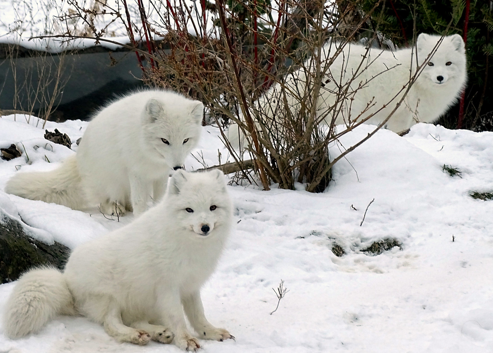
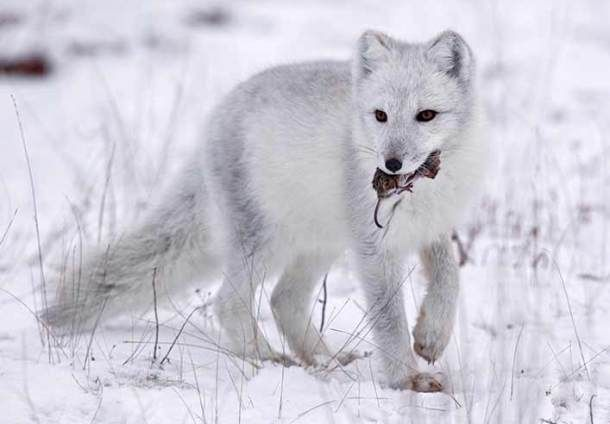
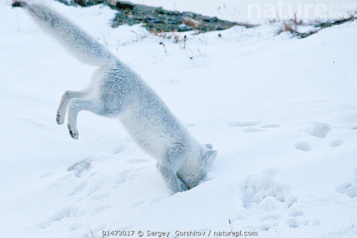
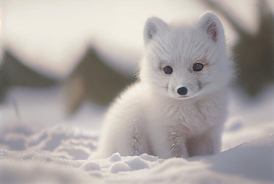

Artic Fox
-

Arctic foxes are well adapted to living in icy-cold environments, such as the Arctic and alpine tundra of the polar region in the Northern hemisphere. The Arctic fox is also much smaller, stouter and more compact than other members of the Fox family, which helps to reduce heat loss due to lower total body surface area. The thickness of the fur also increases for the winter season to help maintain a stable core body temperature and also survive the harsh, cold conditions of the Arctic. With the ability to physically adapt to survive winter, Arctic foxes never have to hibernate.
-

The survival rate of adult arctic foxes can vary depending on the region, food availability and the number of predators in the area. But usually, they live up to 3-4 years in the wild.
-

Lemmings are its favourite prey, but they live in a complex network of tunnel systems buried deep within the snow, protecting them from predators on the ground. So, Arctic foxes carefully listen for lemmings moving or burrowing underneath the snow to pinpoint their location by tilting their heads. Once the prey is located, an Arctic fox can jump several feet in the air and nose dive into the snow to catch its prey. Sometimes, it takes more than a few tries, but it's the effort that counts.
-

adorable new arrivals are still dependent on mum and spending lots of time in underground burrows.